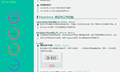
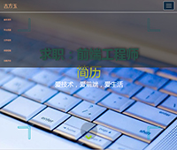
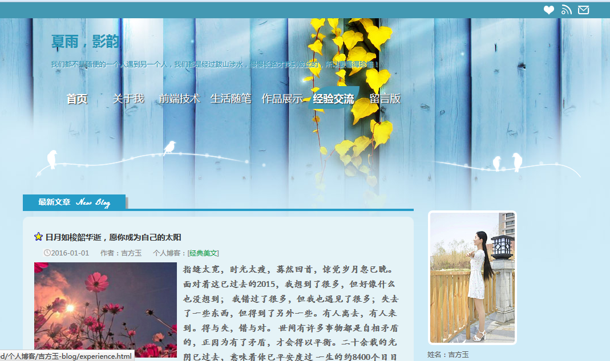
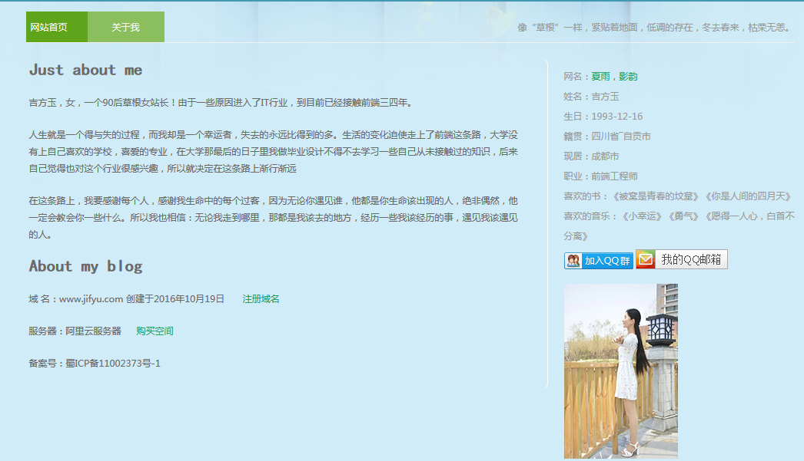
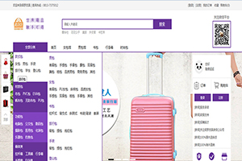
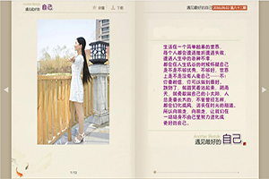
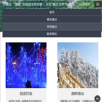

HTML
-
- Basic info. 基本信息
- 个人信息: Snjun / 男 / 24岁
- 教育经历: 大专 / 四川航天职业技术学院
- 英语水平:
- Blog: https://snjun.github.io/blog/
- GitHub: www.github.com/snjun
-
- Work. 个人履历
四川航天职业技术学院（2011.09 - 2014.07）
-
获得证书
2012.08 机动车驾驶证
2013.08 党校结业证
2014.06 大专毕业证
成都市睿峰科技有限公司（2014.08 - 2015.12）
-
Web前端实习
1、根据工作安排高效、高质地完成代码编写，确保符合规范的前端代码规范；
2、负责公司现有项目和新项目的前端修改调试和开发工作；
3、与设计团队紧密配合，能够实现实现设计师的设计想法；
4、与后端开发团队紧密配合，确保代码有效对接，优化网站前端性能；
5、页面通过标准校验，兼容各主流浏览器。
成都市百艺美优网络科技有限公司（2016.03- 2017.3）
-
Web前端工程师
1.负责公司项目的前端修改调试和部分开发工作
2.与后端开发团队紧密配合，确保代码有效对接，优化网站前端性能
3.协助公司各部门，满足和协调公司各相关部门提出的网站技术需求。
4.页面通过标准校验，兼容各主流浏览器
5.负责网站日常运行的技术维护工作，对出现的问题积极有效的进行处理。
- Skill. 技能清单
Web前端
-
HTML/CSS
熟练掌握HTML5、CSS3的各种新特性，实现一些较为复杂的布局和动画；
能手写代码，兼容多种浏览器，并具有良好的可读性和可维护性代码；
-
JavaScript
熟悉JavaScript（ES5/ES6）语言，熟练使用JavaScript（ES6/ES5）/jQuery实现HTML页面DOM操作；
熟悉Ajax/DOM/Prototype，会ionic轻量级框架；
并可实现AJAX的JSONP跨域请求实现页面的局部刷新；
-
其他
熟悉SEO优化，在HTML结构的语义化、文件名命名、变量名命名等能遵循W3C标准和搜索引擎爬虫规范；
Web后台
-
环境
了解 Linux 开发环境、 Linux 服务器环境的搭建部署
熟悉 Linux（SSH/PUTTY）命令行，能进行相应的服务器环境搭建及服务器环境的文件处理；
-
Node.js
熟练使用Node.js(Express)快速构建WEB服务器，快速创建路由；
实现后端路由的配置，文件上传，发送邮件等；
熟悉Handlebars模板引擎，通过Handlebars模板引擎渲染视图；
-
其他
了解 PHP，能够简单使用
熟悉 Java，能进行简单的网络编程和多线程编程
熟悉 jsp，能用 jsp 连接数据库实现用户和管理员的增加，删除，修改等
熟悉 “MEAN” 技术栈的开发；
库和框架
-
熟练使用Bootstrap框架，可以使用框架快速开发出符合规范，美观的，并且适配多数设备的响应式页面；
了解 Less / Sass 等CSS预处理和后处理方法、工具
熟练掌握AngularJS框架，并且可以利用框架熟练快速完成Angular单页面应用。
熟练掌握jQuery，jQueryUI库，可以使用这些库进行熟练开发；
了解学习Vue.js框架，了解Vue.js简单知识；
具有丰富的SPA（基于Angular，React，Director）开发经验。
其他
-
熟悉MongDB数据库，node包管理工具，bower包管理工具，Grunt、Gulp、Webpack自动化构建工具；
熟练使用WebStorm、Brackets、Sublime Text等IDE集成开发环境，对Hbuilder等都有相应的使用经验；
熟练使用PhotoShop进行UI的切图工作；
熟悉Git版本控制工具，可利用git与团队进行协作开发。
- Experience. 项目经验与作品
项目经验
-
户里·家的二手家居门户
项目时间：2016年11月至2016年12月；
开发环境：Tomcat7.x,Myeclipse,WebStorm11.0.3
责任描述：项目组成员 根据项目经理安排，根据UI设计的界面编写网页， 配合后台工作人员完成产品页面的代码编程及脚本编码
项目描述：该项目是一个二手家具商城。综合应用了Java+Servlet+JSP +JavaBean后台技术， 以及HTML,CSS,HTML5,CSS3,JavaScript,jQuery等前端技术。
主要功能：
1.普通用户可以通过商城网站搜索商品并且查看商品详情及买家评论等信息；
2.普通用户可以注册成为会员（免费注册）
3.会员可以对甘心去的商品添加购物车进行购买并付款
4.会员可以添加和修改个人收获地址等信息
5.会员可以查看购买商品的订单状态、物流信息等
-
天上西藏
项目时间：2015年11月至2015年12月；
开发环境：Tomcat7.x,Myeclipse,WebStorm11.0.3
责任描述：项目组成员 根据项目经理安排，根据UI设计的界面编写网页， 配合后台工作人员完成产品页面的代码编程及脚本编码
项目描述：项目是一个直播平台，借鉴MVC设计模式。综合应用了Java+Servlet+JSP +JavaBean技术，以及HTML,CSS,HTML5,CSS3,JavaScript,jQuery等前端技术。由JavaBean 负责具体的业务数据和业务逻辑，设计数据库时采用MySQL数据库，服务器采用的Tomcat7.x。
主要功能：
1.普通用户可以通过系统免费看直播，也有部分收费视频可以试看几分钟；
2.普通用户可以通过本平台进入公司商城网站搜索商品；
3.普通用户可以注册成为系统会员（免费注册）
4.会员可以浏览和检索商品并进行购买
5.会员可以免费看系统的几大类直播视频，也可以给主播送礼物
6.会员之间可以相互加友，也可以查看自己的好友，还有好友消息
7.会员可以查看自己的会员卡账户，可以充值，查询，积分兑换，个人订阅，观看记录等信息
8.会员可以发表动态，可以上传照片和视频
个人作品
-
个人静态简历 源代码 Demo
设计优雅、内容完善的静态简历页面，可以用浏览器直接生成合适尺寸的PDF，支持PDF格式下载简历，可以查看源代码。
 -
个人酷炫简历 源代码 Demo
用Bootstrap+JavaScript+css做的一个酷炫简历
 -
个人博客 源代码 Demo
类似于wordpress的排版风格，蓝色为主色，黄色的枫叶作为整个网站的点缀， 白色的鸟栖息png图片透明分界，是一个简约的两列布局的html5+css3博客， 可以通过个人博客给我发邮件，加qq群，实现了留言和评论功能
  -
保罗皮具 源代码 Demo
用css+html+jQuery实现的一个简单的箱包商城
 -
jquery电子翻书 源代码 Demo
jQuery图片制作的幻灯片电子相册，jQuery带有翻页效果的图片电子书， 支持收藏，翻页功能的电子相册。
 -
四川旅游 源代码 Demo
用Bootstrap+JavaScript+css做的一个界面清晰的响应式布局 ，可用于移动端的页面。
 -
编发馆 源代码 Demo
用css+html+jQuery实现的一个简单的编发馆
-
lawfirm 源代码 Demo
用html+css仿做的一个英文的律师事务所

自我评价
-
有责任，工作踏实，性格开朗乐观，积极上进。
易和人相处，拥有良好的亲和力。
喜欢js，热爱编程，喜欢钻研新的技术，
具有很强的自学能力和良好的学习方法， 喜欢研究各种新的框架。
能够熟练使用 Markdown 进行写作